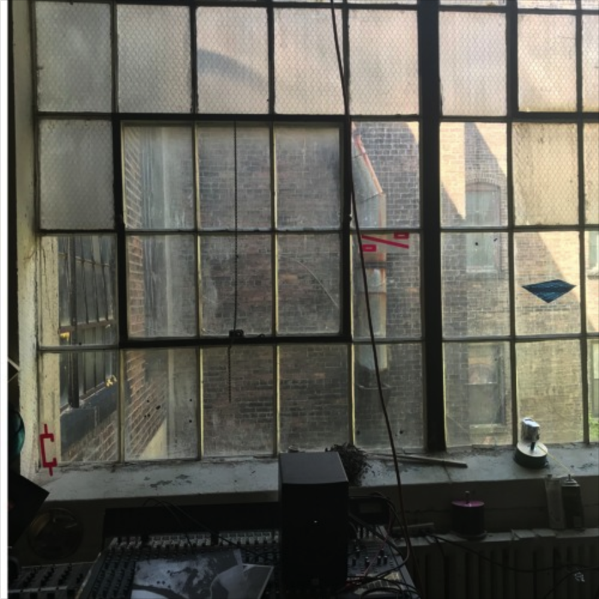
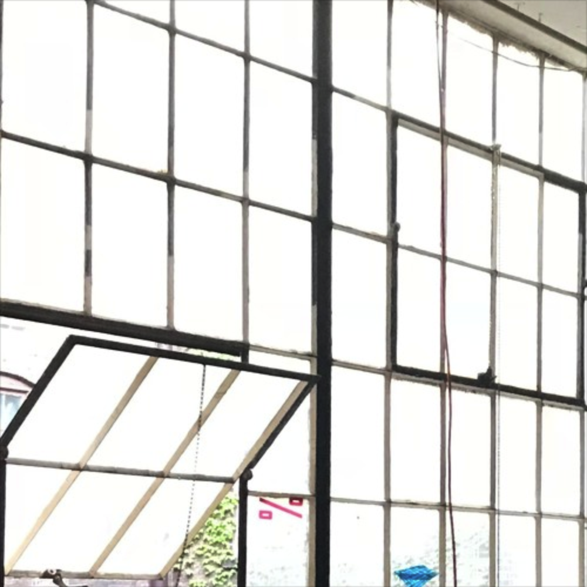
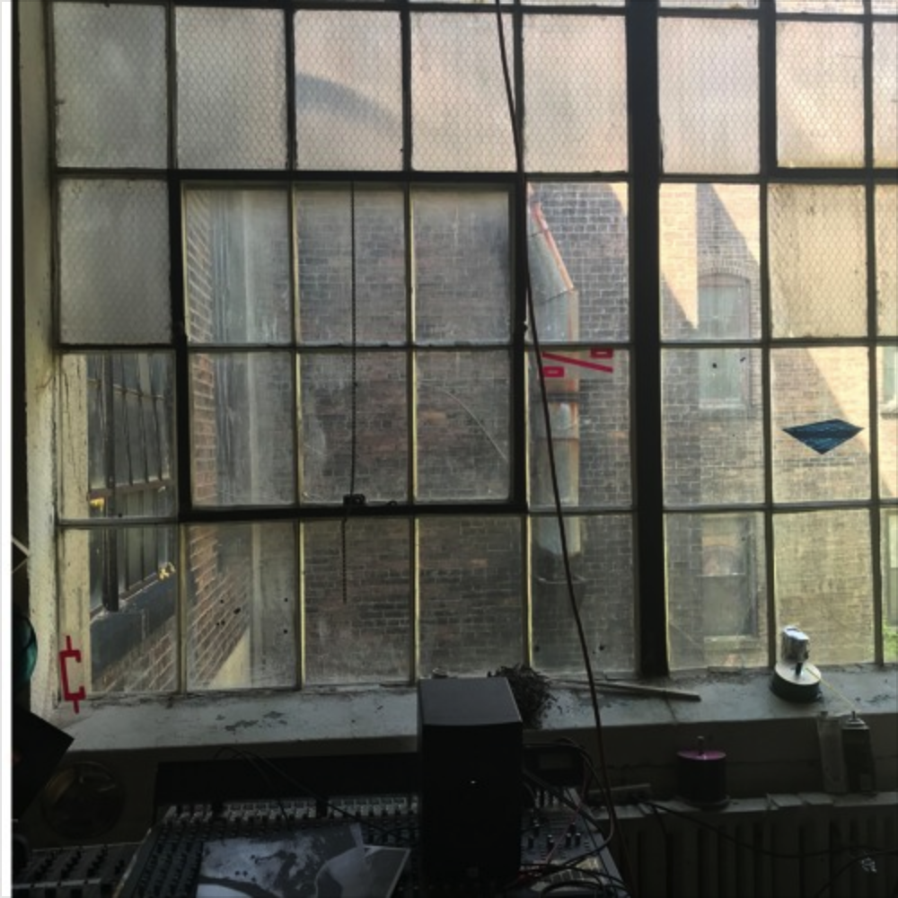
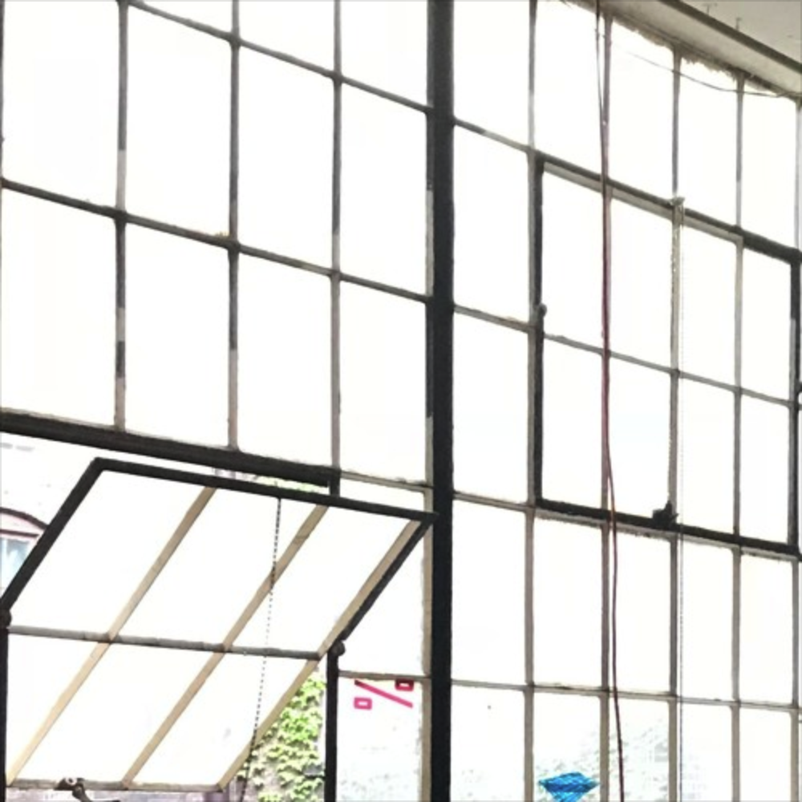

morgantics
Morgantics has been an ongoing audio production and performance project spanning just over a decade.
Initially taking influence from club and beat music, the project now typically
focuses on sound design and rhythm generation with the live-coding tool
tidalcycles
, other computational processes, and modular synthesis.
More info & music
research & development residency
 



Research & Development is the home and studio space of Clevenland based A/V artist
Matthew Gallahger.
In the spring of 2018 I was fortunate enough to spend a week as an artist in residency at R&D while
in town to volunteer for the
PyCon 2018
programming convention. The focus of my stay was to futher my studies
of synthesis and pattern generation via computational methods. To pursue this I used the livecoding language
tidalcyles to generate and process squences and sounds. Some of these sounds were generated by retriggering field
recordings, samples from a modular setup that was brought along for the trip, or sounds generated from python scripts
using the digital signal processing library PYO.
Source Code and Music from R&D
livecode pgh
founding-member / co-organizer
Livecode PGH is a meet-up in Pittsburgh for people interested in learning about livecoding along with other creative coding platforms, or sharing thier tricks of the trade with the local community. The meet-up was started in the spring of 2018 and would typically meet on a weekly/bi-weekly basis. Curently on hiatus, I hope to begin meeting again in 2020 on a regular basis.
imaginative python
Imaginative python is a presentation I had prepared for the November 2019 Pittsburgh Python Users Meet-up. The talk
was geared to inspire those already exposed to python, and demonstrate some of the ways the python programming language
is currently being used creatively by computational artists, game developers, along with hobbyist's and professionals
from varying backgrounds working towards artistic ends. Topics included: using the opensource 3D creation suite
Blender, processing.py, adding interactivity to a project using python, and briefly the python-based livecoding language FoxDot.
Imaginative Python Resources